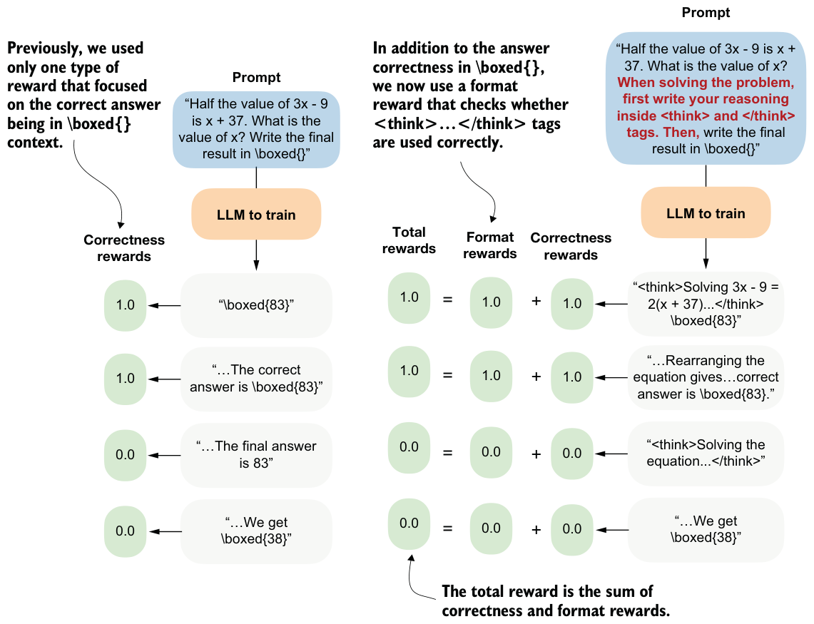

7.6.1Using <think> tokens
Some reasoning models, such as DeepSeek-R1 and Qwen3, use special <think> and </think> tokens. These are ordinary text tokens that mark the beginning and end of the model’s intermediate reasoning. We can prompt the model to write its step-by-step reasoning inside <think> ... </think> and then provide the final answer outside these tags. This approach is optional, but it makes the output structure explicit and helps separate reasoning from the final result.
To illustrate this concept, we’ll start by loading the tokenizer for the base model we used earlier.
from reasoning_from_scratch.ch02 import get_device
from reasoning_from_scratch.ch03 import load_model_and_tokenizer
device = get_device()
model, tokenizer_base = load_model_and_tokenizer(
which_model="base",
device=device,
use_compile=False
)Next, we’ll use the tokenizer to encode <think>:
print(tokenizer_base.encode("<think>"))The output is [13708, 766, 29], which means the tokenizer is breaking up the <think> token into several subword tokens. This indicates that the <think> token is not part of the tokenizer’s vocabulary.
Nowadays, when developing tokenizers and creating the embedding layers of LLMs, developers often leave unused placeholder token IDs that can be used for specific purposes when fine-tuning a model. The Qwen3 base model tokenizer has some empty placeholder slots that we can use to add <think>:
tokenizer_base._tok.add_special_tokens(
["<tool_response>", "</tool_response>", "<think>", "</think>"]
)Note that we are also adding the <tool_response> and </tool_response> tokens in the preceding code to match the tokenizer of the Qwen3 reasoning variant, which we’ll discuss shortly. But first, let’s check whether the modified base tokenizer now supports the newly added <think> and </think> tokens:
print(tokenizer_base.encode("<think>"))
print(tokenizer_base.encode("</think>"))The outputs are single tokens [151667] and [151668], which indicates that the <think> and </think> tokens are now part of the vocabulary and are no longer broken into subword tokens.
These new tokens would also be supported by the base model, which supports token IDs from 0 to 151935, because it has a vocabulary size of 151936. We can confirm this by printing the size of the embedding layer:
print("Vocabulary size:", model.tok_emb.weight.shape[0])Alternatively, instead of modifying the base tokenizer, we could use the reasoning model variant, whose tokenizer already supports these <think> tokens natively. As in chapter 2, we can load the tokenizer separately.
from reasoning_from_scratch.qwen3 import Qwen3Tokenizer
from reasoning_from_scratch.qwen3 import download_qwen3_small
download_qwen3_small(
kind="reasoning", tokenizer_only=True, out_dir="qwen3"
)
tokenizer_path = Path("qwen3") / "tokenizer-reasoning.json"
tokenizer = Qwen3Tokenizer(tokenizer_file_path=tokenizer_path)Now, let’s use the reasoning tokenizer (tokenizer) instead of tokenizer_base to encode the token IDs:
print(tokenizer.encode("<think>"))
print(tokenizer.encode("</think>"))As when we used tokenizer_base, this returns [151667] and [151668].
Now that we have a tokenizer that supports these <think> </think> tokens, we can develop a reward function that checks whether the LLM uses them, and we’ll provide a nonzero reward if it does, as illustrated in figure 7.18. This means that we can develop a function that returns 1.0 if both <think> and </think> appear in the output in the correct order; otherwise, it returns 0.0.
def reward_format(
token_ids,
prompt_len,
start_think_id=151667,
end_think_id=151668,
):
try:
gen = token_ids[prompt_len:].tolist()
return float(
gen.index(start_think_id) < gen.index(end_think_id)
)
except ValueError:
return 0.0
Let’s give this a try on a simple text:
prompt = "Calculate ..."
rollout = "Let's ... <think> ... </think> ..."
token_ids = tokenizer.encode(prompt + rollout)
reward_format(
token_ids=torch.tensor(token_ids),
prompt_len=len(tokenizer.encode(prompt))
)Running the reward_format function in the preceding code snippet returns 1.0 as expected, since the answer (rollout) contains both <think> and </think>.
Exercise 7.1: Testing the <think> format reward
<think> and </think> appear in the correct order. Now modify the rollout text in the following ways:- Introduce a typo in one of the
<think></think>tags. - Reverse the tag order.
- Remove one tag.
Now that we have this new reward_format function, we can use the format reward as an additional signal to train the model. For instance, we could convert compute_grpo_loss from chapter 6 into a compute_grpo_loss_plus_format_reward function, as follows (the changes are highlighted in the comments).
def compute_grpo_loss_plus_format_reward(
# ...
format_reward_weight=1.0,
):
# ...
logp = sequence_logprob(model, token_ids, prompt_len)
rlvr_reward = reward_rlvr(text, example["answer"])
format_reward = reward_format(token_ids, prompt_len) # NEW
reward = rlvr_reward + format_reward_weight * format_reward # NEW
# ...In addition, we can modify render_prompt to direct the model to emit these <think> and </think> tokens explicitly.
def render_prompt_with_think_tokens(prompt):
template = (
"You are a helpful math assistant.\n"
"When solving the problem, first write your reasoning inside <think>
and </think> tags.\n"
"Then write the final result on a new line in the exact format:\n"
"\\boxed{ANSWER}\n\n"
f"Question:\n{prompt}\n\nAnswer:"
)
return templateIn theory, the modifications in code listings 7.11 through 7.14 should be sufficient to train a reasoning model with an additional format reward. Let’s now look at how this works in practice and discuss some additional caveats.